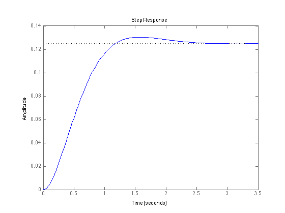

Homework 10
Jeff Geiger
Contents
Problem 21
num = [1]; den = [1 4 8]; sys = tf(num, den) step(sys) % Verify Rise Time [Y, T] = step(sys); [val index] = max(Y); t_p = T(index); % Verify the Damping Ratio damping_ratio = sin(angle(roots(den)))
Transfer function:
1
-------------
s^2 + 4 s + 8
damping_ratio =
0.7071
-0.7071
 Problem 30
F = [-0.4 0 -0.01; 1 0 0; -1.4 9.8 0.02]; G = [6.3 0 9.8]; G = G'; poles = eig(F) C = [G F*G F^2*G] ksols = [63/10 0 49/5 (4-19/50); -28/125 63/10 -4.9 (6+11/500); 0 -28/125 3087/50 (4 - 49/500)]; K = rref(ksols); K = K(:, 4)'
poles =
-0.6476
0.1338 + 0.3653i
0.1338 - 0.3653i
C =
6.3000 -2.6180 1.1334
0 6.3000 -2.6180
9.8000 -8.6240 65.2327
K =
0.4705 1.0246 0.0669